Nmap Firewall Scan
Posted By: T3jv1l 3/1/2018 .

Hello hackers ! Today we are going to demonstrate “Nmap firewall scan” by making use of Iptable rules and try to bypass firewall filter to perfrom NMAP Advance scanning.
Let’s Begin!!
Attacker’s IP: 192.168.0.22 [Kali Linux]
Target’s IP: 192.168.0.19 [Ubuntu]
ANALYSIS TCP SCAN
Open the terminal in your kali linux and execute following command to perform TCP (-sT-) scan for open port enumeration. nmap -sT -p 80 192.168.0.19 From given below image you can observe we had scanned port 80 as result it has shown Port 80 is public port.
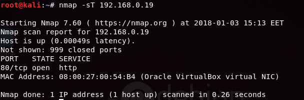| Scan Name | Flag | Data Length | TTL |
| -sT (TCP) | SYN →
← SYN, ACK ACK → RST, ACK → |
60 | 64 |
| -sS (Stealth) | SYN →
← SYN, ACK RST, ACK → |
44 | <64 (Less than 64) |
| -sF (Finish) | FIN → | 40 | <64 (Less than 64) |
| -sN (Null) | NULL → | 40 | <64 (Less than 64) |
| -sX (Xmas) | FIN, PSH, URG → | 40 | <64 (Less than 64) |
Reject SYN Flag with IPTables
As we know there is strong fight between security researcher and attacker, to increase network security admin will apply firewall filter which will now prevent 3 way handshak communication in network and resist attacker to perfrom TCP scan by rejecting SYN packet in network. Execute given below command in ubuntu to block SYN packet:
iptables -I INPUT -p tcp - -tcp-flags ALL SYN -j REJECT - -reject-with tcp-reset
Iptable work as firewall in linux operating system and above iptable rule will reject SYN packet to prevent TCP scan.
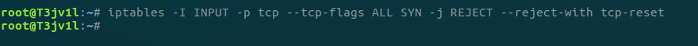Now when SYN packet has been reject by firewall in target network, then attacker will be unable to enumerate open port of target’s network even if services are activated. Now when again we have executed TCP scan then it found Port 80 is closed
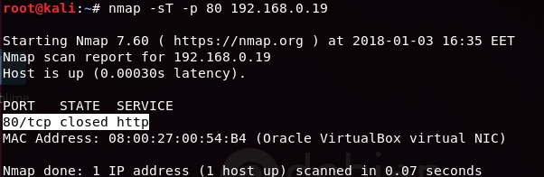Bypass SYN Filter
When attacker fails to enumerate open port using tcp scan. Then there are some advance scaning methods used to bypass such type of firewall filter as given below :
FIN Scan
A FIN packet is used to terminate the TCP connection between source and destination port typically after the data transfer is complete. In the place of a SYN packet, Nmap start a FIN scan by sending FIN packet.
We use nmap -sF -p 80 192.168.0.19
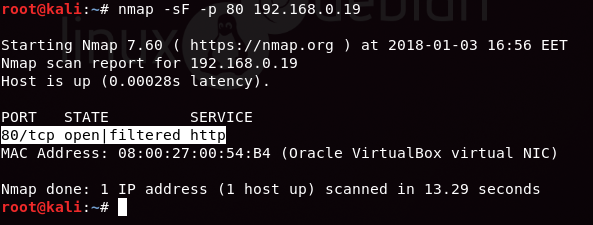NULL Scan (000000)
A Null Scan is a series of TCP packets which hold a sequence number of “zeros” (0000000) and since there are none flags set, the destination will not know how to reply the request. It will discard the packet and no reply will be sent, which indicate that port is open. Null Scan are only workable in Linux machines and does not work on latest version of windows
nmap -sN -p 80 192.168.0.19
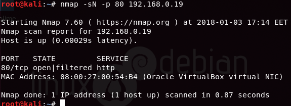We can observe the result that port 80 is open. XD
XMAS Scan
These scans are designed to manipulate the PSH, URG and FIN flags of the TCP header, Sets the FIN, PSH, and URG flags, lighting the packet up like a Christmas tree. When source sent FIN, PUSH, and URG packet to specific port and if port is open then destination will discard the packets and will not sent any reply to source.
nmap -sX -p 80 192.168.0.19
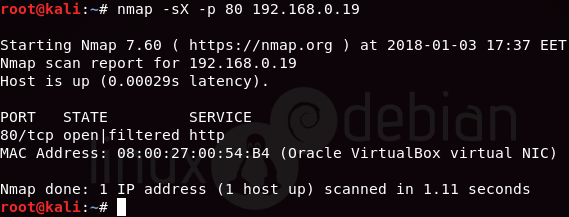OK OK BUT "HOW TO BLOCK THIS SCAN" ?
1) We use iptables rules .For FIN packet we use:
iptables -I INPUT -p tcp - -tcp-flags ALL FIN -j REJECT - -reject-with tcp-reset
2) For NULL SCAN we use:
iptables -I INPUT -p tcp - -tcp-flags ALL NONE -j REJECT - -reject-with tcp-reset
3) and for XMAS we use :
iptables -I INPUT -p tcp - -tcp-flags ALL FIN,PSH,URG -j REJECT - -reject-with tcp-reset
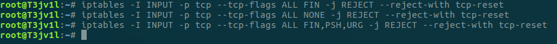 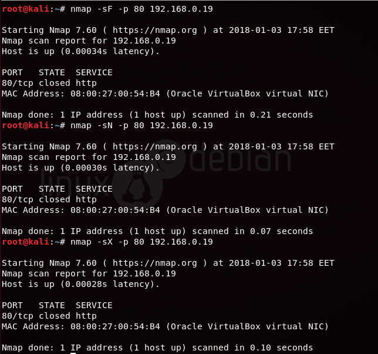ALL scan is blocked ,we see port 80 is closed .To prevent you network from FIN, NULL and XMAS scan too, apply given below iptables rule for FIN ,NULL and XMAS
Reject Data-length with IPTABLES
So now when admin wants secure again his network from TCP scan,insted of applying firewall filter on TCP-flags he can also apply firewall filter rule to check "data lenght" of specific size and then stop incoming network traffic for TCP connection.Execute given below command to apply firewall rule on data lenght by default 60 is data length use for TCP scan which you can confirm from table given above
iptables -I INPUT -p tcp -m length - -length 60 -j REJECT - -reject-with tcp-reset
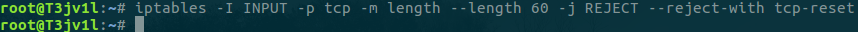Now when again we (attacker) had execte TCP scan then is has found Port 80 is closed
nmap -sT -p 80 192.168.0.19
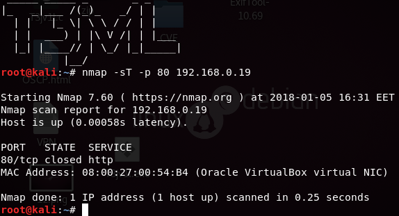BYPASS DATA-LENGTH with STEALTH SCAN
When attacker fail to enumerate open port using TCP scan then there are some scanning method used to bypass such type of firewall filtre as given below :
nmap -sS -p 80 192.168.0.19
data lenght send by stealth scan is 44 by defoult for TCP connection :P
Stealth scan is much similar to TCP scan and also know as scanning because it send SYN packet and as response recives SYN/ACK packet from listening port and dump result without sending ACK packet to listening port
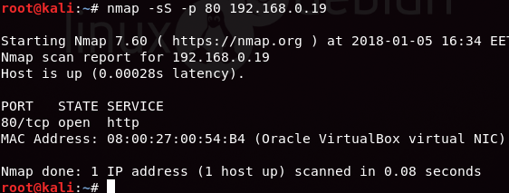Fragment Scan
The -f option cause the requested scan to use tiny fragment IP packets .The idea is to split up the TCP header over several packets to make it harder for packet filters ,intrusion detection system ,and other annoyances to detect what you are doing.So a 20 byte TCP header would be split into three packets,two with wight bytes of TCP header,and one with the final four
nmap -f -p 80 192.168.0.19
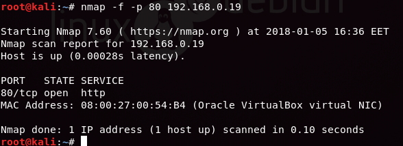If admin will apply firewall filter to reject data lenght 40 ,44,and 60 then it will not alow attackers to perform above all scan wither basic scan or advance scan by executing following iptables rules:
iptables -I INPUT -p tcp -m length --length 60 -j REJECT --reject-with tcp-reset
iptables -I INPUT -p tcp -m length --length 44 -j REJECT --reject-with tcp-reset
iptables -I INPUT -p tcp -m length --length 40 -j REJECT --reject-with tcp-reset
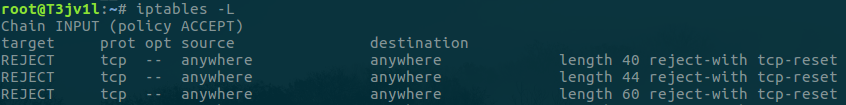nmap -sF -p 80 192.168.0.19 (port 80 is closed)
nmap -sX -p 80 192.168.0.19 (port 80 is closed)
nmap -sN -p 80 192.168.0.19 (port 80 is closed)
nmap -sS -p 80 192.168.0.19 (port 80 is closed)
nmap -sT -p 80 192.168.0.19 (port 80 is closed)
DATA LENGTH SCAN
When attackers is unable to enumerate open port by applying above scan then he should go with nmap "data-lenght" which will bypass above firewall filtre too:
nmap --data-length 12 -p 80 192.168.0.19 this is work :O :O
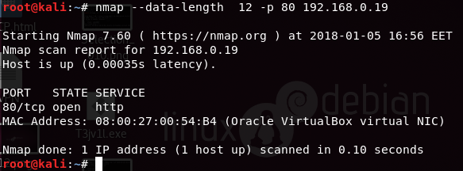But how to block this attack ?? :O we use REJECT LENGTH SIZE 1 to 100 If admin is aware from nmap data-length scan then he should block a complete range of data lenght to prevent network scanning from attacker by executing following Iptable rules:
iptables -I INPUT -p tcp -m length --length 1:100 -j REJECT --reject-with tcp-reset

nmap --data-length 32 -p 80 192.168.0.19 O no it's not working :(
nmap --data-length 12 -p 80 192.168.0.19 Again not working :(
nmap --data-length 113 -p 80 192.168.0.19 Awesome it's working :P
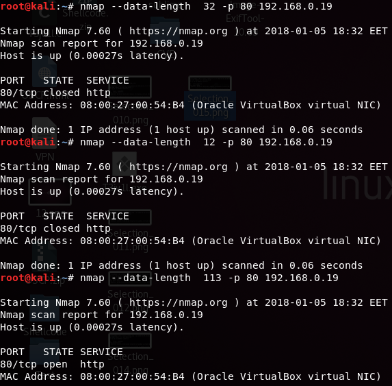